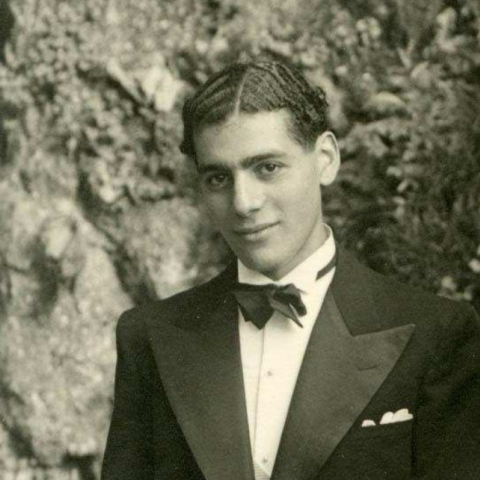

Portrait d’archive
Maurice Algazze
Moses (Moise) Algaze-Razon ou Maurice Algazze ou Algazzi
Maurice Algazze est né le 17/10/1920 à La Havane à Cuba. Nationalité cubaine.
Rassemblé à Lyon, il est déporté à Kaunas-Reval le 15/05/1944 par le convoi n°73. Il est mort le 20 mai 1944 à Kaunas (Lituanie)
Il a été arrêté à Oyonnax (Ain) en mai 1944.
Dernière adresse connue :
École fréquentée : Ecole des Sources ? à Beynost dans la banlieue de Lyon, puis à partir de 1930 à Lyon où il passe son certificat d’études en 1932.
Nom : ALGAZZE
Prénom(s) : Maurice, Moses, Moïse
Date naissance : 17/10/1920
Âge (ans) : 23
Lieu naissance : La Havane
Pays ou département : Cuba
Lieu rassemblement : Lyon
Dernière adresse : 59 rue de L’Hôtel-de-Ville
Ville : Lyon
Code postal : 69002
N° Convoi : 73
Date déportation : 15/05/1944
Informations diverses : Fils de Elise, née Razzon (10/04/1892 à Constantinople) et de Gaston (Guershon) (15/05/1884 à Siivri, frontière gréco-turque de Thrace). La famille quitte La Havane pour s’installer à Lyon en juin 1922 et se lancer dans le textile. Frères et sœurs : Joseph en 1911, Samuel en 1913, Esther en 1917, Jacques en 1919 et Maurice en 1920.
Son père et sa mère sont arrêtés le 15/11/1943 à leur domicile et déportés de Drancy à Auschwitz le 20 novembre 1943 par le convoi 62. Maurice a été arrêté à Oyonnax (Ain) en mai 1944. Maurice a certainement justifié de sa nationalité cubaine grâce à son passeport cubain puisque sur la liste des déportés du convoi 73 figure son nom de famille Algaze-Razon Moses, libellé figurant ainsi uniquement sur son passeport (Source: Nous sommes 900 français, Vol. VI). Ils sont morts en déportation. Une plaque mémorial porte leurs noms à la synagogue Neveh Chalom (69007 Lyon).
Profession : apprentis lunettier ; opticien (sur la liste de déportation)
Algazzi (Maurice), né le 17 octobre 1920 à La Havane (Cuba), décédé le 20 mai 1944 à Kaunas (Lituanie). « Mort en déportation » JO
Un article sur Maurice Algazze par le spécialiste de l’histoire cubaine, Paul Estrade, est paru dans Firmas Selectas en espagnol.
Lieu de déportation : Kaunas-Reval
Lieu de départ : Drancy
Nombre total de déporté·e·s du convoi : 878
Survivant·e·s en 1945 : 17 (1,9 %)